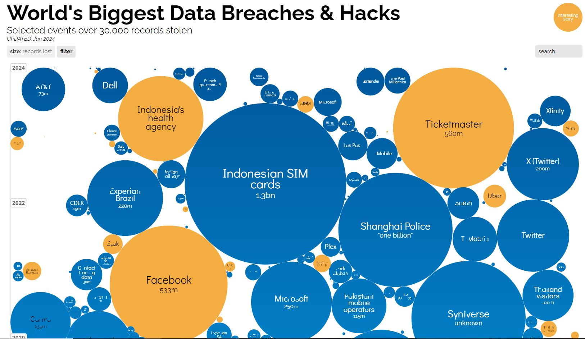
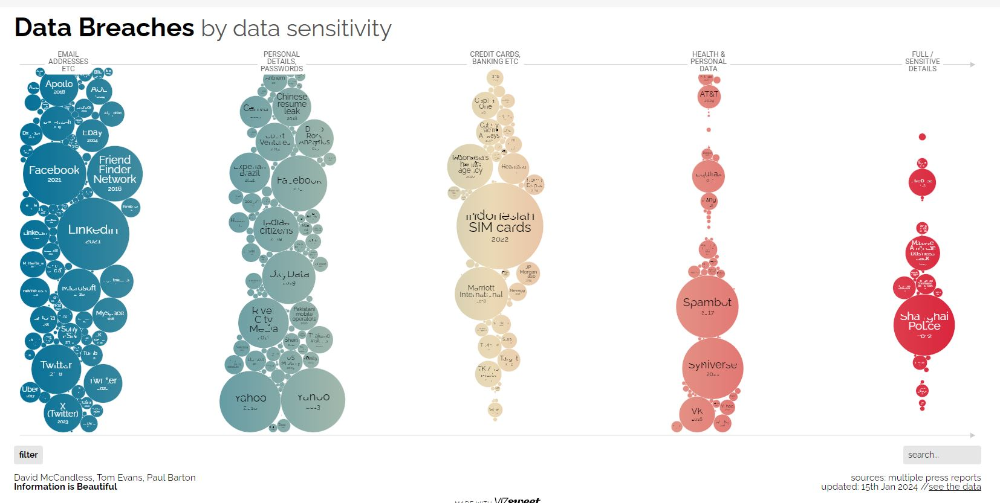

Data breach is a security concern for digital world where unauthorized parties access companies confidential data.
David McCandless, Tom Evans, Paul Barton from the “Information Is Beautiful” published an interactive visualization about major data breaches around worldwide, showing the scale of compromised data and the causes behind these breaches, spanning from 2004 to 2024.
Over the 20 years, there are more and more people who are using the internet which means there are more data in the internet. Also, this is the new era of big data, data has become a valuable asset that can help shape our future better. It is telling us the frequency of data breaches are increasing and more data are getting stolen over the years and we must safeguard our digital data to protect it from unauthorized access, theft or corruption.

Figure 1 : Visualization of World Biggest Data Breaches & Hacks

Figure 2: Visualization of Data Breaches By Data Sensitivity
Critical Assessment of the Original Visualization
Strengths:
…..
Proposed Improvements
# Load the databreaches <-read_csv("dataset/IIB Data Breaches - LATEST - breaches.csv", skip =1)
New names:
Rows: 488 Columns: 16
── Column specification
──────────────────────────────────────────────────────── Delimiter: "," chr
(12): visualisation here: https://informationisbeautiful.net/visualizati... dbl
(3): year story broke, 1. Just email address/Online information 2 SSN/... lgl
(1): ...12
ℹ Use `spec()` to retrieve the full column specification for this data. ℹ
Specify the column types or set `show_col_types = FALSE` to quiet this message.
• `` -> `...2`
• `` -> `...5`
• `` -> `...6`
• `` -> `...9`
• `` -> `...11`
• `` -> `...12`
• `` -> `...13`
• `` -> `...14`
• `` -> `...15`
• `` -> `...16`
Rows: 7173425 Columns: 11
── Column specification ────────────────────────────────────────────────────────
Delimiter: ","
chr (7): ibm, ibm.com, information technology and services, 10001+, new york...
dbl (4): 5872184, 1911.0, 274047, 716906
ℹ Use `spec()` to retrieve the full column specification for this data.
ℹ Specify the column types or set `show_col_types = FALSE` to quiet this message.
# A tibble: 7,173,425 × 3
organisation locality country
<chr> <chr> <chr>
1 tata consultancy services bombay, maharashtra, india india
2 accenture dublin, dublin, ireland ireland
3 us army alexandria, virginia, united states united…
4 ey london, greater london, united kingdom united…
5 hewlett-packard palo alto, california, united states united…
6 cognizant technology solutions teaneck, new jersey, united states united…
7 walmart withee, wisconsin, united states united…
8 microsoft redmond, washington, united states united…
9 at&t dallas, texas, united states united…
10 united states air force randolph, texas, united states united…
# ℹ 7,173,415 more rows
# A tibble: 44,135 × 3
organisation locality country
<chr> <chr> <chr>
1 standard chartered bank london, greater london, united kingdom united…
2 procter & gamble cincinnati, ohio, united states united…
3 independiente <NA> <NA>
4 autonomo <NA> <NA>
5 particular <NA> <NA>
6 internal revenue service washington, district of columbia, united st… united…
7 stay at home mom <NA> <NA>
8 autonomo <NA> <NA>
9 autônomo <NA> <NA>
10 education queensland <NA> <NA>
# ℹ 44,125 more rows
clean_organisation <-function(org) { org %>%str_to_lower() %>%# Convert to lowercasestr_trim() %>%# Trim leading/trailing whitespacestr_replace_all("\\s+", "") %>%# Remove all whitespacestr_replace_all("[^\\w]", "") %>%# Remove special charactersiconv(to ="ASCII//TRANSLIT") # Convert to ASCII}breaches <- breaches %>%mutate(organisation =clean_organisation(organisation))updated_companies_info_df <- companies_info %>%mutate(organisation =clean_organisation(organisation))# Remove duplicates and select first occurrencesunique_df <- companies_info %>%distinct(organisation, .keep_all =TRUE)unique_df
# A tibble: 7,004,635 × 3
organisation locality country
<chr> <chr> <chr>
1 tata consultancy services bombay, maharashtra, india india
2 accenture dublin, dublin, ireland ireland
3 us army alexandria, virginia, united states united…
4 ey london, greater london, united kingdom united…
5 hewlett-packard palo alto, california, united states united…
6 cognizant technology solutions teaneck, new jersey, united states united…
7 walmart withee, wisconsin, united states united…
8 microsoft redmond, washington, united states united…
9 at&t dallas, texas, united states united…
10 united states air force randolph, texas, united states united…
# ℹ 7,004,625 more rows
# A tibble: 446 × 16
organisation `alternative name` `records lost` year date story sector
<chr> <chr> <chr> <dbl> <chr> <chr> <chr>
1 kaiserpermanente <NA> 13,400,000 2024 Apr … A le… health
2 ticketmaster <NA> 560,000,000 2024 Jun … Hack… media
3 stanforduniversity <NA> 27,000 2023 May … The … acade…
4 coolermaster <NA> 500,000 2024 May … Thre… tech
5 financialbusiness… FBCS 3,200,000 2024 Feb … A U.… tech
6 santander <NA> 30,000,000 2024 May … Thre… finan…
7 everbridge <NA> 5,600,000 2024 May … The … tech
8 bbc <NA> 25,000 2024 May … Pers… media
9 firstamerican <NA> 44,000 2023 Dec … The … finan…
10 christies <NA> 500,000 2024 May … Famo… retail
# ℹ 436 more rows
# ℹ 9 more variables: method <chr>, `interesting story` <chr>,
# `data sensitivity` <dbl>, records <chr>, nill <lgl>, `source name` <chr>,
# `source link` <chr>, `source-1` <chr>, `source-2` <dbl>
# Remove rows with missing values using na. omit()updated_companies_info_df <-na.omit(unique_df)updated_companies_info_df
# A tibble: 4,563,999 × 3
organisation locality country
<chr> <chr> <chr>
1 tata consultancy services bombay, maharashtra, india india
2 accenture dublin, dublin, ireland ireland
3 us army alexandria, virginia, united states united…
4 ey london, greater london, united kingdom united…
5 hewlett-packard palo alto, california, united states united…
6 cognizant technology solutions teaneck, new jersey, united states united…
7 walmart withee, wisconsin, united states united…
8 microsoft redmond, washington, united states united…
9 at&t dallas, texas, united states united…
10 united states air force randolph, texas, united states united…
# ℹ 4,563,989 more rows